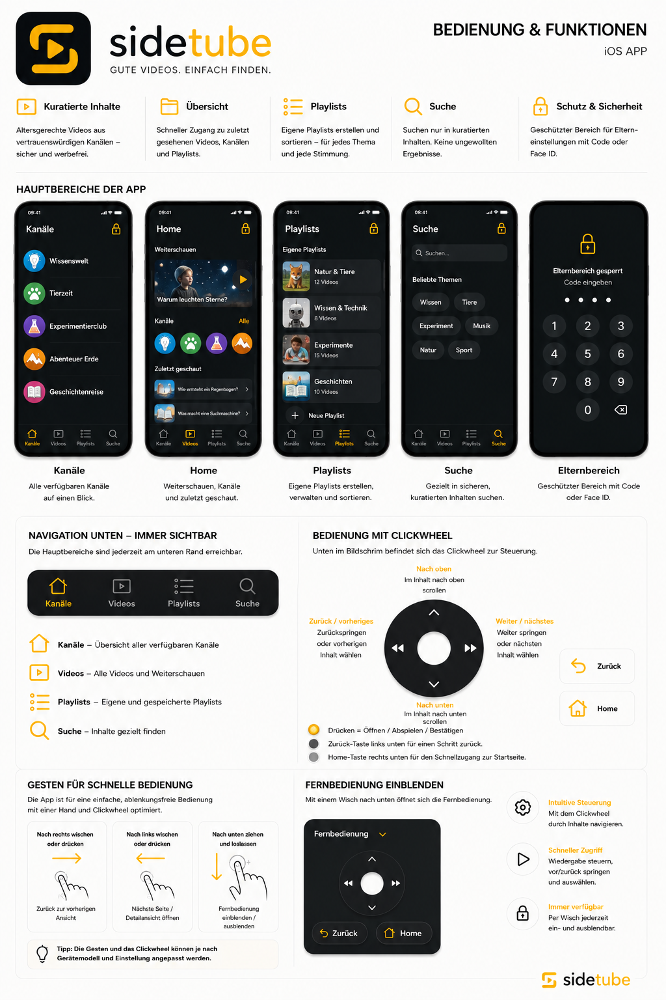

Für Kinder
Ein übersichtlicher Ort mit bekannten Kategorien und einer Suche, die nur freigegebene Inhalte findet.
- Weiterschauen und Mediathek
- Kanäle und Playlists
- Bedienung mit Click-Wheel
- Keine Kommentare oder Trends
SideTube · iOS & Android
SideTube gibt Kindern eine eigene Videothek. Erwachsene wählen den Rahmen, Kinder entscheiden selbst, was sie innerhalb dieses Rahmens sehen.

Auf YouTube liegt vieles, was Kinder wirklich sehen wollen. SideTube macht daraus einen überschaubaren, geschützten Raum: Eltern prüfen Kanäle, Videos und Playlists vorab.
Danach wählen Kinder selbstständig aus. Kein endloses Weiterwischen, keine Trends, keine Kommentare. Ein Werkzeug, das aufhört, wenn die Aufgabe erledigt ist.
Ein übersichtlicher Ort mit bekannten Kategorien und einer Suche, die nur freigegebene Inhalte findet.
Ein nachvollziehbarer Freigabeprozess statt Blackbox. Entscheidungen können erklärt, geändert und gemeinsam besprochen werden.
SideTube bleibt bei den wesentlichen Aufgaben und behandelt Privatsphäre als technische Grundeinstellung.
SideTube wird für iOS und Android entwickelt. Die offiziellen Download- und TestFlight-Links veröffentlichen wir, sobald die Builds bereit für Familien sind.
TestFlight folgt
APK / Play Store folgt
Offen auf GitHub
iOS
Swift · SwiftUI · SwiftData · WebKit · iOS 17+
Android
Kotlin · Jetpack Compose · Material 3 · Room
Status
iOS in aktiver Entwicklung; Android-Fork funktional, Gerätetest offen
Datenschutz
Datenschutz — SideTube